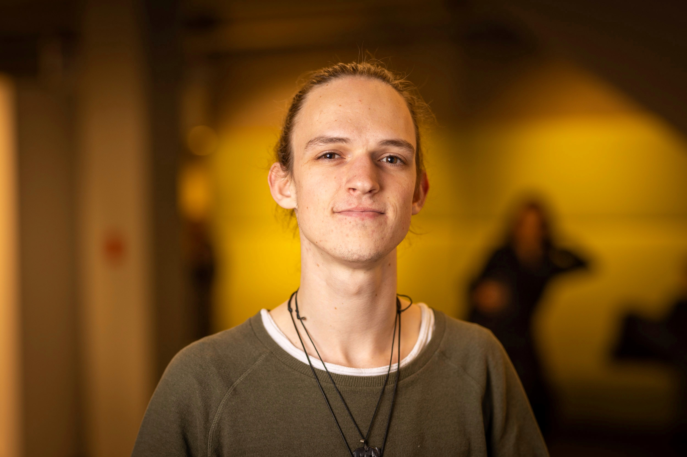

Ik ben erachter gekomen wat ik wil doen in mijn leven: verhalen
vertellen.
Nu ben ik geen schrijver, maar een creatieve vormgever
vanuit techniek, dans en toneel. Ik wil graag betrokken te zijn bij het
creatieve proces, waar de termen interactie, avontuur, optimisme en
‘de ander’ centraal staat.
Ik wil mensen verwonderen en het kind in onszelf aanwakkeren. Ik zal
mensen op een optimistische en magische avontuur willen laten gaan waar
ze meer naar de ander om én opkijken.
